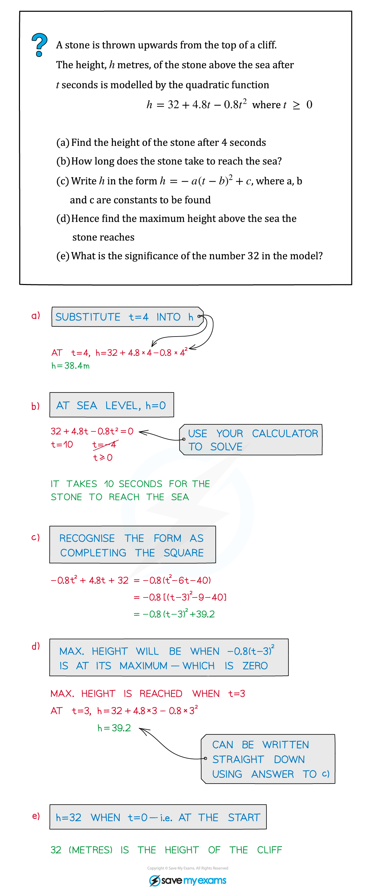
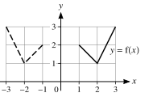
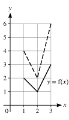
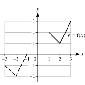
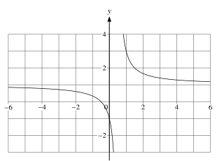
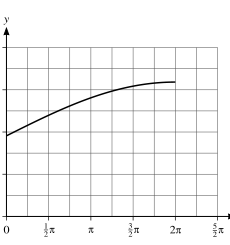
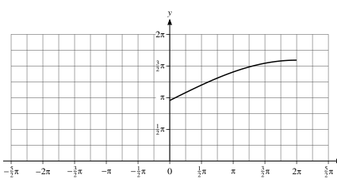
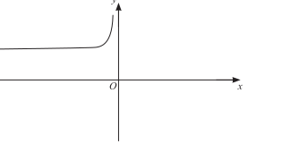
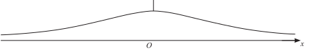
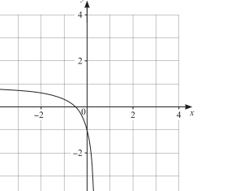

1.2 Functions
Domain · range · one-one functions · inverse functions · transformations
本页依据 9709 Mathematics 2026–2027 syllabus 1.2 Functions：
- 理解 function、domain、range、one-one function、inverse function 和 composite function；
- 在简单情形下求 range 和 composition，并检查 composite function 的 domain/range 条件；
- 判断函数是否 one-one，并求 one-one function 的 inverse；
- 用图像理解 y=f(x) 与 y=f^{-1}(x) 关于 y=x 的镜像关系；
- 使用 y=f(x)+a、y=f(x+a)、y=af(x)、y=f(ax) 及其简单组合描述 graph transformations。
下列 20 组题目均来自工作区保存的 Paper 1 原始 past-paper PDF。题干只把 PDF 排版符号整理为 LaTeX，没有改写或编造题目；答案按对应 mark scheme 的得分步骤展开。题目中的图像均从原始 PDF 独立提取为 SVG，不使用整页截图。
1. Core knowledge
Domain, range and notation
函数 (f:AB) 的 domain 是允许的输入集合 (A)，range 是实际输出集合 (f(A))，不一定等于给出的 codomain (B)。
做题时先保留原题的限制，例如 x>2、x\le -a 或 x\in\mathbb R。求 range 时要同时考虑：
- algebraic restriction，例如分母不能为 0、根号内必须非负；
- domain restriction，例如只取抛物线 vertex 的一侧；
- endpoint 是否包含，例如 x>2 通常会导致 range 的相应 endpoint 不包含。
One-one and inverse functions
函数 one-one 的意思是不同输入不会得到相同输出。图像上可以用 horizontal line test 判断：任一水平线至多与图像相交一次。
求 inverse 的标准步骤是：
y=f(x)\quad\Longrightarrow\quad x= f^{-1}(y),
先交换 (x,y)，再解出 y，最后写清楚 f^{-1} 的 domain。原函数的 domain 会成为 inverse 的 range，原函数的 range 会成为 inverse 的 domain。
图像上，y=f^{-1}(x) 是 y=f(x) 关于镜像线 y=x 的反射；但只有 one-one function 才能把 inverse 当成 function。
Worked example · 原始笔记单卡片

这张原始笔记例题虽然以 quadratic model 为背景，但连接了本节最常用的 function graph 思路：由 algebraic form 读出 domain、vertex、range 和 graph behaviour。工作区没有单独的 Paper 1 Functions note PDF，因此只加入这一张与本节直接相关的原始 worked example。
Composite functions
复合函数按从右向左代入：
fg(x)=f(g(x)),\qquad gf(x)=g(f(x)).
要形成 (gf)，必须满足 (f) 的 range 落在 (g) 的 domain 内；要形成 (fg)，必须满足 (g) 的 range 落在 (f) 的 domain 内。不能只把符号 (fg) 当成乘法。
Transformations
从 y=f(x) 出发：
y=f(x)+a \Rightarrow \text{vertical translation by }(0,a),
y=f(x+a) \Rightarrow \text{horizontal translation by }(-a,0),
y=af(x) \Rightarrow \text{vertical stretch by scale factor }a,
y=f(ax) \Rightarrow \text{horizontal stretch by scale factor }\frac1a.
若题目给出多个 transformation，必须按照题目指定顺序逐步代入；特别要注意 horizontal transformation 作用在 (x) 的输入上，方向与直觉容易相反。
2. Verified Paper 1 past-paper questions
Question 1 · 9709/13/M/J/20 Q3(a–c)
In each of parts (a), (b) and (c), the graph shown with solid lines has equation y=f(x). The graph shown with broken lines is a transformation of y=f(x).

- State, in terms of f, the equation of the graph shown with broken lines. [1]

- State, in terms of f, the equation of the graph shown with broken lines. [1]

- State, in terms of f, the equation of the graph shown with broken lines. [2]
Show detailed mark scheme answer
- The broken graph is the reflection of y=f(x) in the y-axis, so
\boxed{y=f(-x)}.
- Every (y)-coordinate has been doubled, so
\boxed{y=2f(x)}.
- The graph has moved 4 units left and 3 units down. A move 4 units left gives (f(x+4)), and a move 3 units down gives
PastPaper/2020/2020/9709-s20-qp-13.pdf, Q3(a–c), and matching 9709-s20-ms-13.pdf. The three diagrams are independently extracted SVGs from the original PDF.
Question 2 · 9709/13/M/J/20 Q9(a–d)
The functions (f) and (g) are defined by
f(x)=x^2-4x+3\quad\text{for }x>c, \qquad g(x)=\frac1{x+1}\quad\text{for }x>-1,
where (c) is a constant.
- Express f(x) in the form (x-a)^2+b. [2]
It is given that (f) is a one-one function.
- State the smallest possible value of (c). [1]
It is now given that c=5.
Find an expression for f^{-1}(x) and state the domain of f^{-1}. [3]
Find an expression for (gf(x)) and state the range of (gf). [3]
Show detailed mark scheme answer
f(x)=x^2-4x+3=(x-2)^2-1.
The vertex is at x=2. To keep only one branch of the parabola, the domain x>c must start at c=2 or to its right. Hence the smallest possible value is \boxed{c=2}.
With c=5, let y=(x-2)^2-1. Then
x-2=\pm\sqrt{y+1}.
Since the original domain is (x>5), choose the positive branch:
\boxed{f^{-1}(x)=2+\sqrt{x+1}}.
For x>5, f(x)>f(5)=8, so the domain of the inverse is \boxed{x>8}.
gf(x)=g(f(x))=\frac1{f(x)+1} =\frac1{(x-2)^2}.
For x>5, (x-2)^2>9, hence
\boxed{gf(x)=\frac1{(x-2)^2}}, \qquad \boxed{0<gf(x)<\frac19}.PastPaper/2020/2020/9709-s20-qp-13.pdf, Q9(a–d), and matching 9709-s20-ms-13.pdf.
Question 3 · 9709/12/M/J/20 Q5(a–b)
The function f is defined for x\in\mathbb R by f:x\mapsto a-2x, where a is a constant.
Express ff(x) and f^{-1}(x) in terms of a and x. [4]
Given that ff(x)=f^{-1}(x), find x in terms of a. [2]
Show detailed mark scheme answer
ff(x)=f(a-2x)=a-2(a-2x)=4x-a.
For the inverse, let y=a-2x. Then 2x=a-y, so
\boxed{f^{-1}(x)=\frac{a-x}{2}}.
4x-a=\frac{a-x}{2} \Longrightarrow 8x-2a=a-x \Longrightarrow 9x=3a.
Therefore \boxed{x=\frac a3}.PastPaper/2020/2020/9709-s20-qp-12.pdf, Q5(a–b), and matching 9709-s20-ms-12.pdf.
Question 4 · 9709/12/O/N/20 Q5(a–b)
Functions (f) and (g) are defined by
f(x)=4x-2\quad(x\in\mathbb R), \qquad g(x)=\frac4{x+1}\quad(x\in\mathbb R,\ x\ne-1).
Find the value of (fg(7)). [1]
Find the values of x for which f^{-1}(x)=g^{-1}(x). [5]
Show detailed mark scheme answer
g(7)=\frac4{8}=\frac12, \qquad fg(7)=f\left(\frac12\right)=2-2=\boxed0.
- From y=4x-2,
\boxed{f^{-1}(x)=\frac{x+2}{4}}.
From y=4/(x+1),
y(x+1)=4\Longrightarrow x=\frac4y-1,
so
\boxed{g^{-1}(x)=\frac4x-1},\qquad x\ne0.
Equating,
\frac{x+2}{4}=\frac4x-1 \Longrightarrow x(x+2)=16-4x \Longrightarrow x^2+6x-16=0.
Thus
(x+8)(x-2)=0,
and \boxed{x=-8\text{ or }x=2}. Both satisfy the inverse-function domain restrictions.PastPaper/2020/2020/9709_w20_qp_12.pdf, Q5(a–b), and matching 9709_w20_ms_12.pdf.
Question 5 · 9709/12/F/M/21 Q7(a–c)
Functions (f) and (g) are defined as follows:
f:x\mapsto x^2+2x+3\quad\text{for }x\le-1,
g:x\mapsto 2x+1\quad\text{for }x\ge-1.
Express f(x) in the form (x+a)^2+b and state the range of f. [3]
Find an expression for f^{-1}(x). [2]
Solve the equation gf(x)=13. [3]
Show detailed mark scheme answer
f(x)=x^2+2x+3=(x+1)^2+2.
Because (x), the smallest value is 2, so
\boxed{\text{range of }f=[2,\infty)}.
- Let y=(x+1)^2+2. Since x+1\le0, choose the negative square-root branch:
x+1=-\sqrt{y-2}.
Therefore
\boxed{f^{-1}(x)=-1-\sqrt{x-2}},\qquad x\ge2.
gf(x)=2f(x)+1=2\bigl((x+1)^2+2\bigr)+1=2(x+1)^2+5.
So
2(x+1)^2+5=13 \Longrightarrow (x+1)^2=4.
The algebraic possibilities are x=1 and x=-3, but the original domain is x\le-1. Hence \boxed{x=-3}.PastPaper/2021/2021/9709_m21_qp_12.pdf, Q7(a–c), and matching 9709_m21_ms_12.pdf.
Question 6 · 9709/13/M/J/21 Q2
The function (f) is defined by
f(x)=\frac13(2x-1)^{3/2}-2x\quad\text{for }\frac12<x<a.
It is given that (f) is a decreasing function.
Find the maximum possible value of the constant (a). [4]
Show detailed mark scheme answer
Differentiate:
f'(x)=\frac13\cdot\frac32(2x-1)^{1/2}\cdot2-2 =\sqrt{2x-1}-2.
For (f) to be decreasing,
\sqrt{2x-1}-2\le0 \Longleftrightarrow \sqrt{2x-1}\le2 \Longleftrightarrow x\le\frac52.
The interval begins at x=1/2, so the greatest possible upper endpoint is
\boxed{a=\frac52}.PastPaper/2021/2021/9709_s21_qp_13.pdf, Q2, and matching 9709_s21_ms_13.pdf.
Question 7 · 9709/12/O/N/21 Q2(a–b)
The graph of y=f(x) is transformed to the graph of y=f(2x)-3.
- Describe fully the two single transformations which have been combined to give the resulting transformation. [3]
The point P=(5,6) lies on the transformed curve y=f(2x)-3.
- State the coordinates of the corresponding point on the original curve y=f(x). [2]
Show detailed mark scheme answer
- Replacing (x) by (2x) is a horizontal stretch with scale factor (1/2). Subtracting 3 gives a translation 3 units down. Thus the transformations are
\boxed{\text{horizontal stretch factor }\frac12\text{, followed by translation }(0,-3)}.
- Since P=(5,6) lies on y=f(2x)-3,
6=f(2\cdot5)-3\Longrightarrow f(10)=9.
Therefore the corresponding point on y=f(x) is \boxed{(10,9)}.PastPaper/2021/2021/9709_w21_qp_12.pdf, Q2(a–b), and matching 9709_w21_ms_12.pdf.
Question 8 · 9709/11/O/N/21 Q8(a–e)
- Express -3x^2+12x+2 in the form -3(x-a)^2+b, where a and b are constants. [2]
The one-one function f is defined by f:x\mapsto-3x^2+12x+2 for x\le k.
- State the largest possible value of (k). [1]
It is now given that k=-1.
State the range of (f). [1]
Find an expression for (f^{-1}(x)). [3]
The result of translating the graph of y=f(x) by
\begin{pmatrix}-3\\1\end{pmatrix}
is the graph of y=g(x).
- Express (g(x)) in the form (px^2+qx+r). [3]
Show detailed mark scheme answer
-3x^2+12x+2=-3(x-2)^2+14.
The vertex is at x=2. For the restricted domain x\le k to stay on one branch, the largest possible value is \boxed{k=2}.
With k=-1,
f(-1)=-3-12+2=-13,
and f(x)\to-\infty as x\to-\infty. Hence \boxed{\text{range of }f=(-\infty,-13]}. $$
- Let y=-3(x-2)^2+14. Since x\le-1, choose the left branch:
x=2-\sqrt{\frac{14-y}{3}}.
Therefore
\boxed{f^{-1}(x)=2-\sqrt{\frac{14-x}{3}}},\qquad x\le-13.
- A translation by (-3,1) gives g(x)=f(x+3)+1. Thus
PastPaper/2021/2021/9709_w21_qp_11.pdf, Q8(a–e), and matching 9709_w21_ms_11.pdf.
Question 9 · 9709/12/F/M/22 Q9(a–b)
Functions (f), (g) and (h) are defined as follows:
f(x)=x-4\sqrt{x}+1\quad(x\ge0),
g(x)=mx^2+n\quad(x\ge-2), \qquad h(x)=\sqrt{x}-2\quad(x\ge0),
where m and n are constants.
Solve f(x)=0, giving your solutions in the form x=a+b\sqrt c. [4]
Given that f(x)=gh(x), find the values of m and n. [4]
Show detailed mark scheme answer
- Let u=\sqrt{x}, so u\ge0 and x=u^2. Then
u^2-4u+1=0,
giving
u=2\pm\sqrt3.
Both are non-negative, so
x=(2\pm\sqrt3)^2=7\pm4\sqrt3.
Thus \boxed{x=7-4\sqrt3\text{ or }x=7+4\sqrt3}.
gh(x)=g(\sqrt{x}-2)=m(\sqrt{x}-2)^2+n.
Expanding,
gh(x)=m(x-4\sqrt{x}+4)+n.
Comparing with f(x)=x-4\sqrt{x}+1, the coefficient of x gives m=1, and then 4+n=1, so
\boxed{m=1,\quad n=-3}.PastPaper/2022/2022/9709_m22_qp_12.pdf, Q9(a–b), and matching 9709_m22_ms_12.pdf.
Question 10 · 9709/11/M/J/22 Q6(a–c)
The function (f) is defined by
f(x)=\frac{x^2-4}{x^2+4}\quad\text{for }x>2.
Find an expression for (f^{-1}(x)). [3]
Show that (1-) can be expressed as () and hence state the range of (f). [4]
Explain why the composite function (ff) cannot be formed. [1]
Show detailed mark scheme answer
- Let y=(x^2-4)/(x^2+4). Then
y(x^2+4)=x^2-4 \Longrightarrow x^2(y-1)=-4(y+1) \Longrightarrow x^2=\frac{4(y+1)}{1-y}.
Since (x>2), take the positive square root:
\boxed{f^{-1}(x)=2\sqrt{\frac{x+1}{1-x}}}.
1-\frac8{x^2+4}=\frac{x^2+4-8}{x^2+4}=\frac{x^2-4}{x^2+4}=f(x).
For (x>2), (x^2+4>8), so (0<8/(x^2+4)<1). Hence
\boxed{0<f(x)<1}.
- The range of f is (0,1), but the domain of f is x>2. Since the range of the inner f is not contained in the domain of the outer f, ff cannot be formed.
PastPaper/2022/2022/9709_s22_qp_11.pdf, Q6(a–c), and matching 9709_s22_ms_11.pdf. The graph is an independently extracted SVG from the original PDF.
Question 11 · 9709/12/M/J/22 Q10(a–d)
Functions (f) and (g) are defined as follows:
f(x)=\frac{2x+1}{2x-1}\quad\text{for }x\ne\frac12, \qquad g(x)=x^2+4\quad(x\in\mathbb R).

State the domain of (f^{-1}). [1]
Find an expression for (f^{-1}(x)). [3]
Find (gf^{-1}(3)). [2]
Explain why (g^{-1}(x)) cannot be found. [1]
Show detailed mark scheme answer
- Rewrite (f):
f(x)=1+\frac2{2x-1}.
As (x), (f(x)), but (f(x)). Therefore the range of (f), and hence the domain of (f^{-1}), is
\boxed{x\in\mathbb R,\ x\ne1}.
- Let y=(2x+1)/(2x-1). Then
y(2x-1)=2x+1 \Longrightarrow 2x(y-1)=y+1.
Thus
\boxed{f^{-1}(x)=\frac{x+1}{2(x-1)}},\qquad x\ne1.
f^{-1}(3)=\frac{4}{4}=1, \qquad gf^{-1}(3)=g(1)=1^2+4=\boxed5.
- g(x)=x^2+4 is not one-one on \mathbb R, because g(t)=g(-t). Therefore g^{-1} cannot be a function on the stated domain.
PastPaper/2022/2022/9709_s22_qp_12.pdf, Q10(a–d), and matching 9709_s22_ms_12.pdf.
Question 12 · 9709/13/O/N/22 Q2(a–c)
The function f is defined by f(x)=-2x^2-8x-13 for x<-3.
Express (f(x)) in the form (-2(x+a)^2+b), where (a) and (b) are integers. [2]
Find the range of (f). [1]
Find an expression for (f^{-1}(x)). [3]
Show detailed mark scheme answer
f(x)=-2(x^2+4x+4)-13+8=-2(x+2)^2-5.
- On x<-3, we have x+2<-1. As x\to-3^{-}, f(x)\to-7, but x=-3 is excluded; as x\to-\infty, f(x)\to-\infty. Hence
\boxed{\text{range of }f=(-\infty,-7)}.
- Let y=-2(x+2)^2-5. Then
(x+2)^2=-\frac{y+5}{2}.
Since (x+2<0), choose the negative root:
\boxed{f^{-1}(x)=-2-\sqrt{-\frac{x+5}{2}}},\qquad x<-7.PastPaper/2022/2022/9709_w22_qp_13.pdf, Q2(a–c), and matching 9709_w22_ms_13.pdf.
Question 13 · 9709/12/F/M/23 Q2
A function f is defined by f(x)=x^2-2x+5 for x\in\mathbb R. A sequence of transformations is applied in the following order to the graph of y=f(x) to give the graph of y=g(x):
- Stretch parallel to the (x)-axis with scale factor (1/2);
- Reflection in the (y)-axis;
- Stretch parallel to the (y)-axis with scale factor 3.
Find (g(x)), giving your answer in the form (ax^2+bx+c). [4]
Show detailed mark scheme answer
The horizontal stretch factor 1/2 gives y=f(2x). Reflecting in the y-axis gives y=f(-2x). Finally stretch parallel to the y-axis by factor 3:
g(x)=3f(-2x).
Since f(t)=t^2-2t+5,
\begin{aligned} g(x)&=3\left((-2x)^2-2(-2x)+5\right)\\ &=3(4x^2+4x+5)\\ &=\boxed{12x^2+12x+15}. \end{aligned}PastPaper/2023/2023/9709_m23_qp_12.pdf, Q2, and matching 9709_m23_ms_12.pdf.
Question 14 · 9709/12/M/J/23 Q8(a–d)
The diagram shows the graph of y=f(x), where
f(x)=3+2\sin\frac14x\quad\text{for }0\le x\le2\pi.

On the diagram above, sketch the graph of y=f^{-1}(x). [2]
Find an expression for (f^{-1}(x)). [2]

The diagram above shows part of the graph of g(x)=3+2\sin\frac14x for -2\pi\le x\le2\pi. Complete the sketch of the graph of g(x) on the diagram above and hence explain whether the function g has an inverse. [2]
Describe fully a sequence of three transformations which can be combined to transform the graph of y=\sin x for 0\le x\le\frac12\pi to the graph of y=f(x), making clear the order in which the transformations are applied. [6]
Show detailed mark scheme answer
The inverse graph is the reflection of the given graph in the line y=x.
y=3+2\sin\frac{x}{4} \Longrightarrow \sin\frac{x}{4}=\frac{y-3}{2}.
On the given domain, (0x/4/2), so the principal inverse sine is valid:
\boxed{f^{-1}(x)=4\sin^{-1}\left(\frac{x-3}{2}\right)},\qquad 3\le x\le5.
On [-2\pi,2\pi], the input x/4 runs from -\pi/2 to \pi/2, where sine is increasing. Therefore g is one-one and its graph passes through the corresponding reflected/extended points; \boxed{g\text{ has an inverse}}.
Starting with y=\sin x:
- stretch parallel to the x-axis by scale factor 4, giving y=\sin(x/4);
- stretch parallel to the y-axis by scale factor 2, giving y=2\sin(x/4);
- translate 3 units upwards, giving y=3+2\sin(x/4).
PastPaper/2023/2023/9709_s23_qp_12.pdf, Q8(a–d), and matching 9709_s23_ms_12.pdf. Both graphs are independently extracted SVGs from the original PDF.
Question 15 · 9709/12/O/N/23 Q8(a–c)
Functions (f) and (g) are defined by
f(x)=(x+a)^2-a\quad\text{for }x\le-a,
g(x)=2x-1\quad(x\in\mathbb R),
where (a) is a positive constant.
Find an expression for (f^{-1}(x)). [3]
- State the domain of (f^{-1}). [1]
State the range of (f^{-1}). [1]
Given that a=\frac72, solve the equation gf(x)=0. [3]
Show detailed mark scheme answer
- Let y=(x+a)^2-a. Since x\le-a, x+a\le0, so
x+a=-\sqrt{y+a}.
Therefore
\boxed{f^{-1}(x)=-a-\sqrt{x+a}}.
- The minimum of f occurs at x=-a, giving f(-a)=-a. Thus
\boxed{\operatorname{dom}(f^{-1})=[-a,\infty)}, \qquad \boxed{\operatorname{range}(f^{-1})=(-\infty,-a]}.
gf(x)=2f(x)-1=0\Longrightarrow f(x)=\frac12.
With a=7/2,
(x+\tfrac72)^2-\tfrac72=\frac12 \Longrightarrow (x+\tfrac72)^2=\frac92.
The domain (x/2) selects the negative root:
\boxed{x=-\frac{7+3\sqrt2}{2}}.PastPaper/2023/2023/9709_w23_qp_12.pdf, Q8(a–c), and matching 9709_w23_ms_12.pdf.
Question 16 · 9709/13/O/N/23 Q7(a–c)
The function (f) is defined by
f(x)=1+\frac3{x-2}\quad\text{for }x>2.
State the range of (f). [1]
Obtain an expression for (f^{-1}(x)) and state the domain of (f^{-1}). [4]
The function g is defined by g(x)=2x-2 for x>0.
- Obtain a simplified expression for (gf(x)). [2]
Show detailed mark scheme answer
Since x-2>0, 3/(x-2)>0, so \boxed{\text{range of }f=(1,\infty)}.
Let y=1+3/(x-2). Then
y-1=\frac3{x-2}\Longrightarrow x=2+\frac3{y-1}.
Therefore
\boxed{f^{-1}(x)=2+\frac3{x-1}},\qquad \boxed{x>1}.
PastPaper/2023/2023/9709_w23_qp_13.pdf, Q7(a–c), and matching 9709_w23_ms_13.pdf.
Question 17 · 9709/11/M/J/24 Q6(a–d)
The function (f) is defined by
f(x)=\frac2{x^2}+4\quad\text{for }x<0.

On this diagram, sketch the graph of y=f^{-1}(x). Show any relevant mirror line. [2]
Find an expression for (f^{-1}(x)). [3]
Solve the equation f(x)=4.5. [1]
Explain why the equation f^{-1}(x)=f(x) has no solution. [1]
Show detailed mark scheme answer
The inverse graph is the reflection of the given graph in y=x, using the negative branch because the original domain is x<0.
Let y=2/x^2+4. Then
y-4=\frac2{x^2}\Longrightarrow x^2=\frac2{y-4}.
Since (x<0),
\boxed{f^{-1}(x)=-\sqrt{\frac2{x-4}}},\qquad x>4.
\frac2{x^2}+4=4.5 \Longrightarrow \frac2{x^2}=\frac12 \Longrightarrow x^2=4.
The domain x<0 gives \boxed{x=-2}.
- f(x)>4, so every output of f is positive. But the domain of f is x<0, whereas f^{-1}(x) is defined only for x>4. There is no common input x, so \boxed{f^{-1}(x)=f(x)\text{ has no solution}}.
PastPaper/2024/2024/qp-202406-mathematics-p11.pdf, Q6(a–d), and matching ms-202406-mathematics-p11.pdf. The graph is an independently extracted SVG from the original PDF.
Question 18 · 9709/12/M/J/24 Q4(a–c)
The function (f) is defined as follows:
f(x)=\sqrt{x}-1\quad\text{for }x>1.
- Find an expression for (f^{-1}(x)). [1]
The diagram shows the graph of y=g(x), where
g(x)=\frac1{x^2+2}\quad(x\in\mathbb R).

- State the range of g and explain whether g^{-1} exists. [2]
The function h is defined by h(x)=1/(x^2+2) for x\ge0.
- Solve the equation hf(x)=f(25/16). Give your answer in the form a+b\sqrt c. [4]
Show detailed mark scheme answer
- Let y=\sqrt{x}-1. Then \sqrt{x}=y+1, so x=(y+1)^2. Hence
\boxed{f^{-1}(x)=(x+1)^2},\qquad x>0.
- Since (x^2), (x^2+2), so
\boxed{0<g(x)\le\frac12}.
The graph is not one-one on \mathbb R, because g(x)=g(-x). Therefore \boxed{g^{-1}\text{ does not exist on }\mathbb R}.
f\left(\frac{25}{16}\right)=\frac54-1=\frac14.
Let u=f(x)=\sqrt{x}-1. Then h(f(x))=1/(u^2+2), so
\frac1{(\sqrt{x}-1)^2+2}=\frac14 \Longrightarrow (\sqrt{x}-1)^2=2.
Since x>1, \sqrt{x}-1>0, giving \sqrt{x}=1+\sqrt2. Therefore
\boxed{x=3+2\sqrt2}.PastPaper/2024/2024/qp-202406-mathematics-p12.pdf, Q4(a–c), and matching ms-202406-mathematics-p12.pdf. The graph is an independently extracted SVG from the original PDF.
Question 19 · 9709/12/O/N/24 Q5(a–b)
The function (f) is defined by
f(x)=\frac{2x+1}{2x-1}\quad\text{for }x<\frac12.
- State the value of f(-1). [1]
- The diagram shows the graph of y=f(x). Sketch the graph of y=f^{-1}(x) on this diagram. Show any relevant mirror line. [2]

- Find an expression for f^{-1}(x) and state the domain of the function f^{-1}. [4]
The function g is defined by g(x)=3x+2 for x\in\mathbb R.
- Solve the equation f(x)=gf(1/4). [3]
Show detailed mark scheme answer
(a)(i)
f(-1)=\frac{-2+1}{-2-1}=\boxed{\frac13}.
(a)(ii) The inverse graph is the reflection of the original graph in y=x, using the branch corresponding to the restricted domain x<1/2.
(a)(iii) Let y=(2x+1)/(2x-1). Then
y(2x-1)=2x+1 \Longrightarrow 2x(y-1)=y+1 \Longrightarrow x=\frac{y+1}{2(y-1)}.
For (x<1/2), the range is (y<1), so
\boxed{f^{-1}(x)=\frac{x+1}{2(x-1)}},\qquad \boxed{x<1}.
f\left(\frac14\right)=\frac{\frac12+1}{\frac12-1}=-3, \qquad gf\left(\frac14\right)=g(-3)=-7.
Thus
\frac{2x+1}{2x-1}=-7 \Longrightarrow 2x+1=-14x+7 \Longrightarrow x=\boxed{\frac38}.
This satisfies x<1/2.PastPaper/2024/2024/qp-202410-mathematics-p12.pdf, Q5(a–b), and matching ms-202410-mathematics-p12.pdf. The graph is an independently extracted SVG from the original PDF.
Question 20 · 9709/13/O/N/24 Q8(a–c)
- Express 3x^2-12x+14 in the form 3(x+a)^2+b, where a and b are constants to be found. [2]
The function f(x)=3x^2-12x+14 is defined for x\ge k, where k is a constant.
- Find the least value of k for which the function f^{-1} exists. [1]
For the rest of this question, assume that (k) has the value found in part (b).
- Find an expression for f^{-1}(x). [3]
Show detailed mark scheme answer
3x^2-12x+14=3(x^2-4x+4)+2=3(x-2)^2+2.
Thus a=-2, b=2.
The vertex is at x=2. Restricting the domain to x\ge2 leaves one branch of the parabola, so the least possible value is \boxed{k=2}.
Let y=3(x-2)^2+2. On x\ge2, choose the positive branch:
x-2=\sqrt{\frac{y-2}{3}}.
Hence
\boxed{f^{-1}(x)=2+\sqrt{\frac{x-2}{3}}},\qquad x\ge2.PastPaper/2024/2024/qp-202410-mathematics-p13.pdf, Q8(a–c), and matching ms-202410-mathematics-p13.pdf.